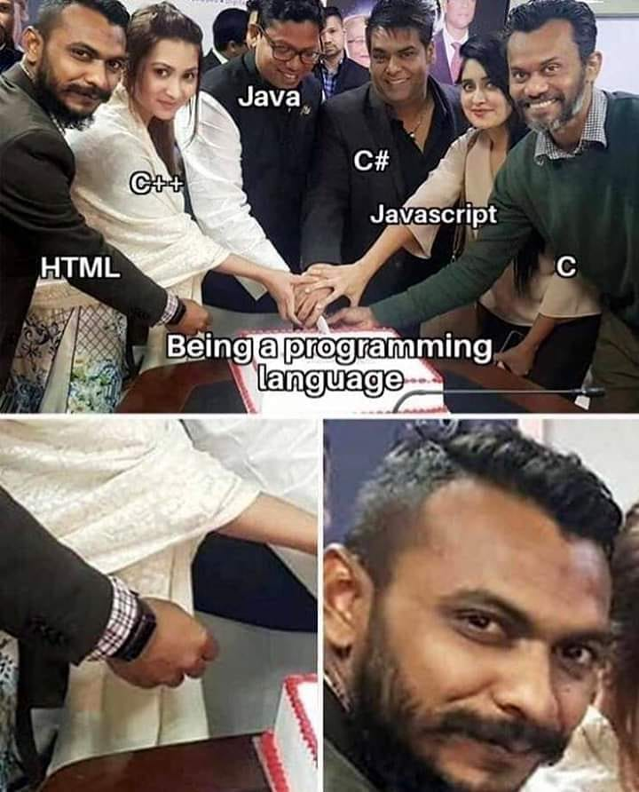

<!DOCTYPE html>
<html>
	<head>
		<title>ipan gay</title>

		<link rel="stylesheet" href="styles/style.css" />
	</head>
	<body>
		<!-- 
		<h1>Heading 1</h1>
		<h2>Heading 2</h2>
		<h3>Heading 3</h3>
		<h4>Heading 4</h4>
		<h5>Heading 5</h5>
		<h6>Heading 6</h6>
		<button>test</button>
		<br />
		<button class="btn">ayam</button><br />
		<input type="checkbox" /><br />
		<input type="color" /><br />
		<input type="date" /><br />
		<input type="email" /><br />
		<input type="password" /><br />
		<a href="https://www.google.com/">google</a>
		
		
		-->

		<!-- contoh list, ul : Unordered List dan ol : Ordered List -->
		<!-- <ul>
			<li>ayam goreng</li>
			<li>bebek goreng</li>
			<li>martabak</li>
		</ul>
		<ol>
			<li>bangun pagi</li>
			<li>sikat gigi</li>
			<li>makan</li>
		</ol> -->

		<!-- contooh element inline -->
		<!-- <button>tambah</button>
		<button>kurang</button>
		<button>kali</button> -->

		<!-- contoh element block -->
		<!-- <p>
			Tabrakan kereta api di Balasore, Odisha, India, menewaskan 150
			penumpang dan melukai lebih dari 600 penumpang.
		</p>
		<p>
			Recep Tayyip Erdoğan terpilih kembali menjadi Presiden Turki dalam
			putaran kedua, sementara Partai Keadilan dan Pembangunan yang
			dipimpinnya kembali memperoleh kursi terbanyak dalam pemilihan umum
			parlemen yang diadakan sebelumnya.
		</p> -->

		<h1 id="text"></h1>
		<!-- <button id="" class="submit">submit</button> -->
		<input type="text" id="ipan-gay" />

		<script src="script.js"></script>
	</body>
</html>
